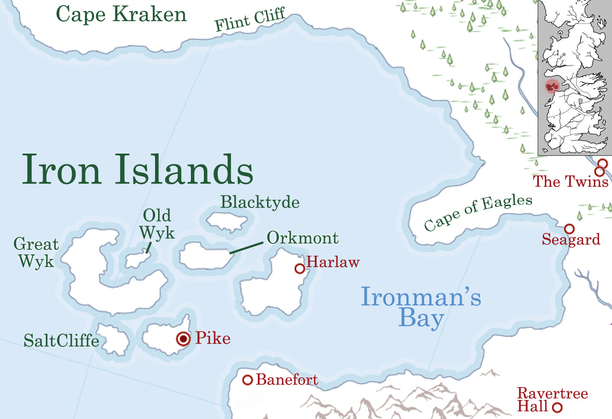

Iron Islands
The Iron Islands is one of the constituent regions of the Seven Kingdoms, and was formerly a sovereign nation under the same name, until the War of Conquest. The Iron Islands are home to a fierce people who call themselves the Ironborn and are ruled by House Greyjoy from the castle of Pyke.
The Iron Islands is an archipelago of seven islands in Ironman’s Bay, located on the western coast of Westeros, roughly west of the Riverlands, northwest of the Westerlands, and south of the North. The seven islands are named Pyke, Great Wyk, Old Wyk, Harlaw, Saltcliffe, Blacktyde, and Orkmont. It is the smallest and least populous of the regions of the Seven Kingdoms.
